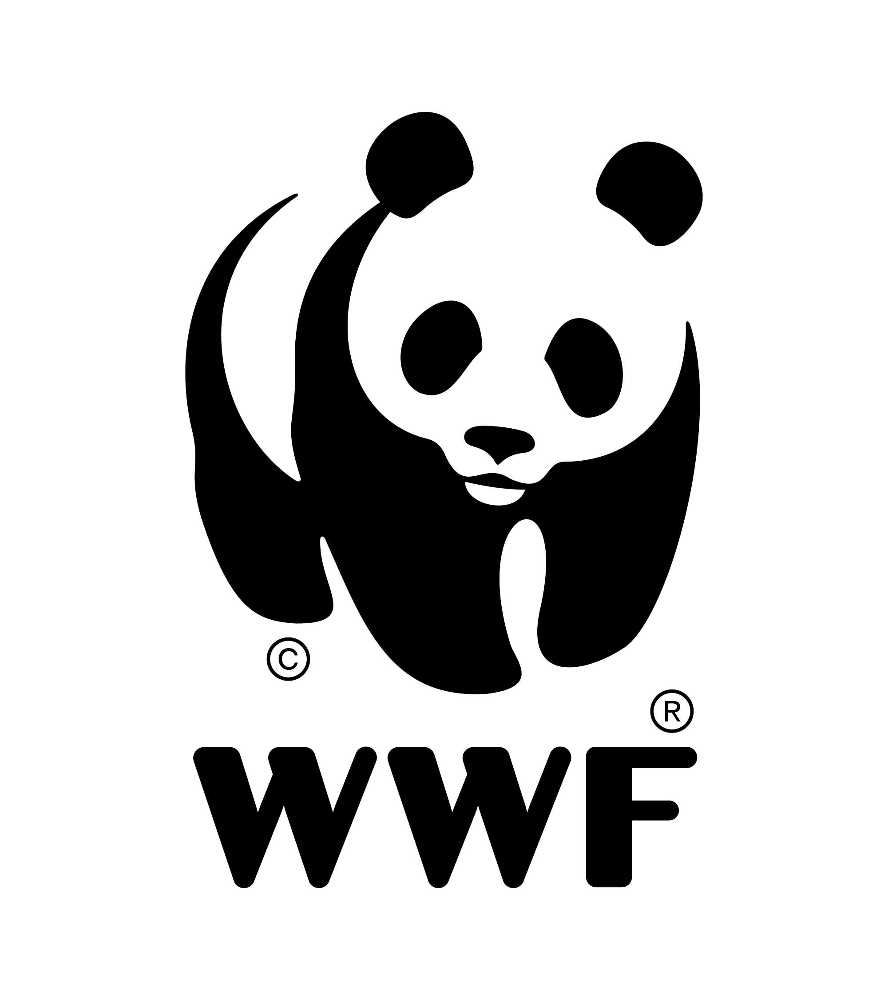
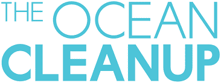

Basura en Océanos
Las bolsas de plástico representan una gran parte de la basura en nuestros océanos. Este problema sigue siendo un desafío global a pesar de las iniciativas internacionales.
Impacto en la Vida Marina
Las bolsas plásticas tienen un efecto devastador en la vida marina, con animales marinos que se ven atrapados o ingieren plásticos, afectando sus ecosistemas.
Plástico en Océanos por Región
Leyes
Repasamos las leyes más relevantes sobre la prohibición de bolsas plásticas y su implementación en diversas regiones del mundo.
ONGs en Acción
Estas organizaciones lideran la lucha contra el uso de bolsas plásticas.
 
Impacto y Estadísticas
Veamos los datos más recientes sobre la cantidad de bolsas plásticas utilizadas y las alternativas que están surgiendo para mitigar el problema.
Preguntas Frecuentes
Ocean Guard....contaminación plástica.
a causas relacionadas.
Las regiones más afectadas incluyen el Pacífico Norte y las costas de países con infraestructura limitada para la gestión de residuos.